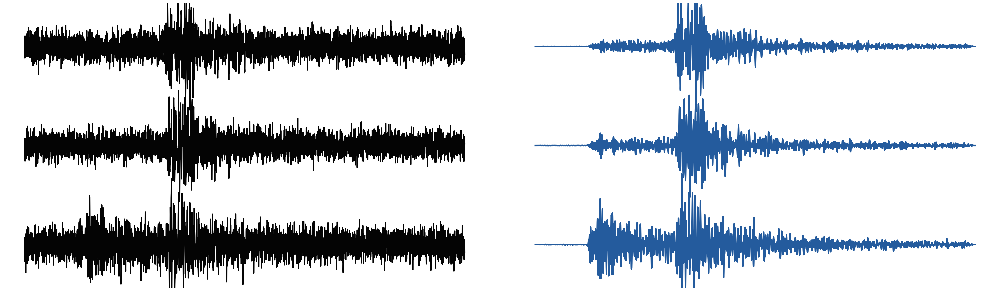
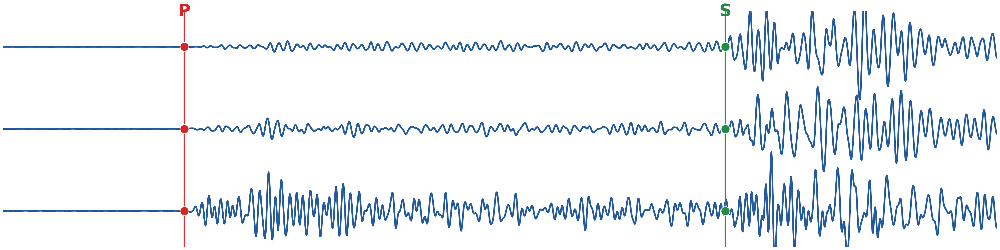
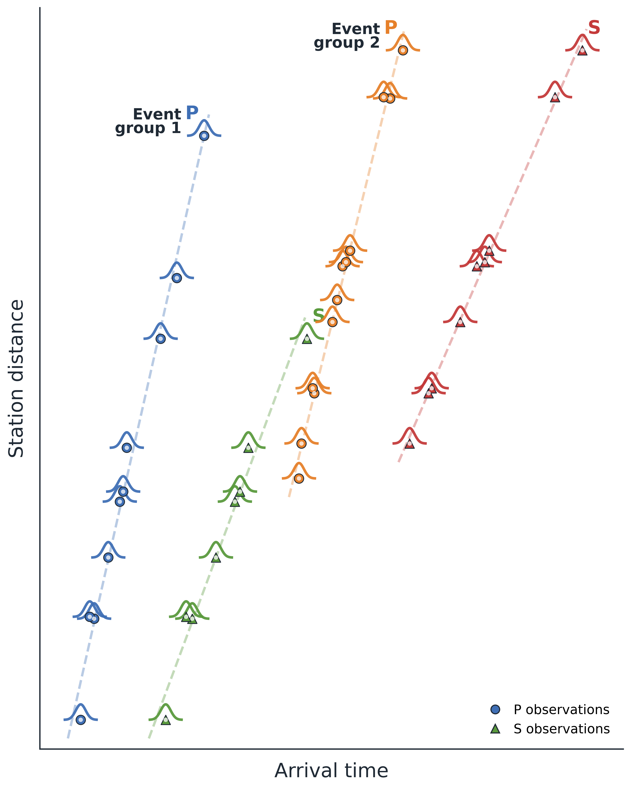
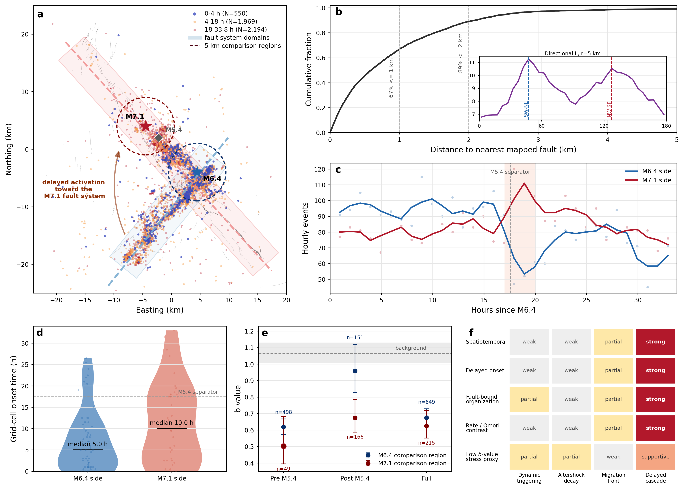
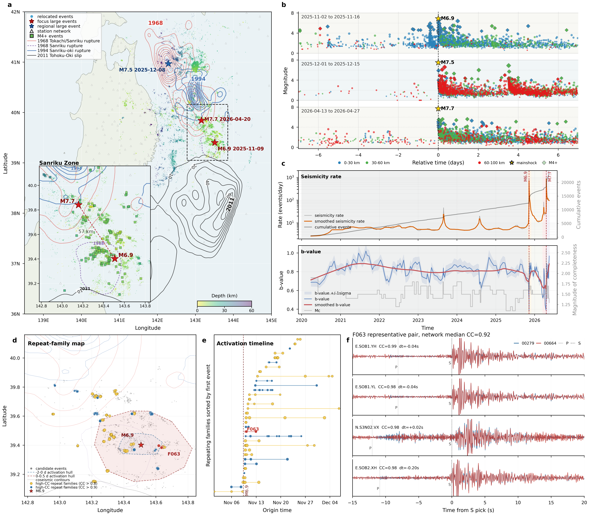
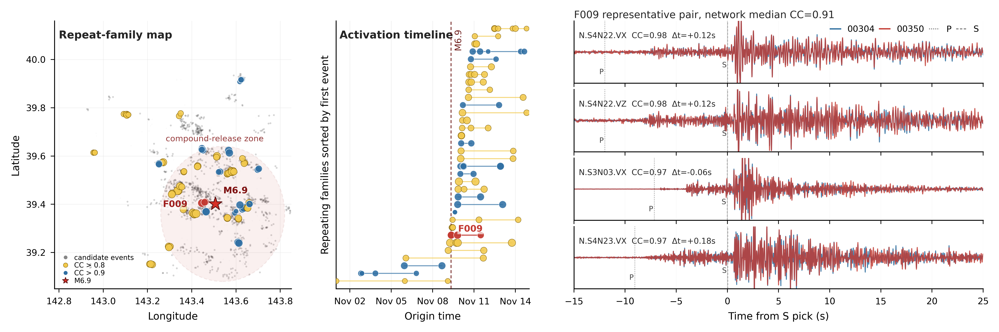

You give TRACE a question such as "How did seismicity reorganize between the Ridgecrest mainshocks?" TRACE decomposes it into data, analysis, validation and reporting stages. It selects tools, generates code, executes the workflow, inspects the outputs and keeps the evidence needed for the final interpretation.
TRACE review materials
From scientific questions to inspectable evidence.
TRACE is a multi-agent workflow for seismic research. It turns a scientific request into a sequence of plans, tools, executable analysis, checks, and evidence-linked results.
The central idea
An agent is not just a chatbot that writes code. It is a controlled loop that plans, executes, inspects, revises, and records scientific work.
104
benchmark tasks
3
evaluated models
2
current applications
25,646
validated Sanriku events
01 / Scientific discovery framework
TRACE connects scientific questions to inspectable evidence.
The first page introduces the multi-agent framework itself. The benchmark page measures bounded execution and workflow control; the Applications page shows how the same evidence-preserving workflow is used on real earthquake sequences and can later be extended to other scientific domains.
01 / The idea
What does an "agent" mean in this study?
A scientific agent is more than a language model that writes a script. It is a controlled research loop that turns a question into executable work, checks what the work produced, and preserves the path from observation to interpretation.
The public release exposes case entry scripts, generated analysis code, parameters, outputs, reports, state records and execution trajectories. These records let a reader inspect not only the final figure, but also the choices and checks that produced it.
Two complementary applications
Validation and discovery are deliberately separated.
Ridgecrest: retrospective validation
TRACE starts from continuous waveforms in the well-studied 2019 sequence and reconstructs a catalog-based interpretation of delayed cascading activation between the Mw 6.4 and Mw 7.1 earthquakes.
Read the applicationSanriku: an unresolved sequence
TRACE starts from JMA catalog and phase-arrival products, then integrates relocation, stage-resolved seismicity and waveform similarity to formulate a testable interpretation before the 2026 Mw 7.7 rupture.
Read the application02 / The workflow
From an open question to an evidence-supported interpretation.
TRACE connects planning, execution and synthesis while preserving the information boundary at each stage. The language model proposes and implements workflows; scientific tools generate the numerical and graphical products; diagnostics determine which products are allowed into the evidence chain.
Translate a question into candidate pathways.
The planning agents identify the target sequence, available observations, requested outputs and candidate mechanisms. They query structured seismological knowledge and validated tool metadata, then aggregate feasible plans under data and physical constraints.
Generate, run and check the analysis.
Workflow and coding agents turn a selected plan into executable scripts. A result-checking agent inspects file validity, numerical ranges, catalog completeness, spatial and temporal consistency, convergence and visualization diagnostics. Permitted revisions remain in the record.
Compare evidence across perspectives.
Analysis agents summarize spatiotemporal, statistical, waveform and source evidence. A cross-perspective synthesis classifies each relation to candidate interpretations as supporting, inconsistent or unresolved, and retains viable alternatives and external validation targets.
01
Question
Define the scientific objective and the evidence needed to answer it.
02
Plan
Turn the objective into data, analysis, validation and reporting stages.
03
Build
Select tools and generate the code that performs the requested operation.
04
Check
Inspect tables, figures, diagnostics and intermediate assumptions.
05
Synthesize
Connect the evidence into a bounded, reviewable scientific result.



Recorded provenance
Every interpretation has an inspectable route back to data.
Input boundaryQuestion, data sources, spatial and temporal selections, and permitted context.
PlanningPhysical constraints, candidate interpretations and retained analysis branches.
ExecutionTools, scripts, parameters, input-output paths and intermediate products.
DiagnosticsComputational checks, physical checks, revisions and intervention status.
EvidenceSource product, method, parameters, diagnostic status and finding.
SynthesisSupporting, inconsistent or unresolved relations, alternatives and validation targets.
02 / Benchmark
Does the agent complete scientific work?
The benchmark separates bounded tool execution from longer workflow control. Level 1 tests individual seismological operations. Level 2 tests chaining, branching, batching and constrained exploration. Level 3 is represented by the two integrated case studies.
Overall result
4.82/ 5
Mean task score across 104 tasks and three evaluated models. Manual-reference visualization ratings are the mean of five expert ratings on a 1-5 scale.
310 passing runs
4.93 expert reference
Selected level
4.83
Level 1
Atomic scientific operations, from data access and signal processing to statistics and visualization.
74 tasks
72 complete
99.5% run success
Atomic task capability
Data access and retrieval, data representation and formatting, signal processing, statistics and feature extraction, and scientific visualization.
Multi-step analytical capability
Sequential chaining, heuristic branching, scalable batching and scanning, and constrained space exploration under physical constraints.
Integrated scientific analysis
End-to-end workflows that connect case-specific observations, candidate interpretations, multiple analyses and structured evidence synthesis.
Model comparison
Three models, one task set
| Model | Mean score | Run success | Debug rounds |
|---|
Task composition
What the benchmark asks for
Assessment protocol
Deterministic outputs were compared with expert-designed reference solutions using predefined criteria and numerical tolerances. Qualitative Level 1 and Level 2 outputs were scored by five experts on task-specific 1-5 scales. The final output-level score is the mean of those five ratings. Level 3 case reports were reviewed qualitatively across planning, implementation and synthesis; no numerical Level 3 score was assigned.
03 / Scientific applications
Case studies that grow with the framework.
Each application uses the same evidence-preserving architecture with a different observational entry point and scientific question. New cases can be added here without changing the benchmark or the framework description.
Application 01 / Validation
Ridgecrest
Continuous waveforms to a relocated catalog and delayed-cascading interpretation.
Application 02 / Discovery
Sanriku
Trusted catalog products to shallow-interface activation and a testable rupture-geometry hypothesis.
Extension path
Next applications
Volcanic unrest, global catalog analysis and other scientific domains can be added as separate application records.
Planned expansion
Application 01 / Validation
Ridgecrest: reconstructing delayed cascading activation.
The 2019 sequence is the retrospective validation case. TRACE began with continuous waveforms and mapped surface ruptures, without a prescribed target interpretation, and recovered an established physical interpretation from the resulting catalog evidence.

Scientific question
How did seismicity reorganize between the Mw 6.4 foreshock and the Mw 7.1 mainshock?
TRACE constructed a high-resolution catalog, then examined spatial timing, proximity to mapped surface ruptures, seismicity-rate evolution and magnitude-frequency structure during the approximately 34-hour interval between the two earthquakes.
The evidence supported delayed, fault-bound activation toward the fault segment that later hosted the Mw 7.1 rupture. The result was consistent with previous Ridgecrest studies, providing retrospective validation of the observation-to-interpretation workflow.
47selected three-component stations
1.45M / 1.64MP / S picks above the PhaseNet threshold
140,505associated events before relocation
84,474final relocated earthquakes
Waveforms became a traceable catalog.
The workflow covered 4-26 July 2019, retained 853 quality-controlled station-day records, picked P and S arrivals with PhaseNet, associated arrivals with GaMMA and refined locations with HypoDD.
The activation was organized by the fault network.
Most events during the interval were within 2 km of mapped surface ruptures. Median activation onset was approximately 5.0 hours on the Mw 6.4 side and 10.0 hours on the later Mw 7.1 side.
The catalog constrains organization, not a unique mechanism.
The delayed onset, persistent late activity and lower post-separator b-value on the Mw 7.1 side support delayed cascading activation. Coulomb stress transfer, rate-and-state response and postseismic deformation remain viable physical contributions.
Application 02 / Discovery
Sanriku: linking shallow activation to rupture geometry.
The Sanriku sequence is the discovery application. TRACE began from official JMA event and phase-arrival products, then used relocation, fixed-stage catalog analysis, migration diagnostics and repeating-earthquake evidence to formulate a testable interpretation.

Scientific question
What evidence constrains shallow-interface activation before the April 2026 Mw 7.7 rupture?
TRACE relocated 25,646 of 33,482 regional events from 1 June 2025 to 2 May 2026. It focused on the shallow-interface region containing the November 2025 Mw 6.9 and April 2026 Mw 7.7 source regions, separated by approximately 57 km.
The synthesis linked short-term activation around Mw 6.9 with persistent, spatially segmented activity before Mw 7.7, within a patch bracketed by regions of past large coseismic slip. This is a testable interpretation, not a prospective forecast or a unique causal attribution.
33,482regional JMA catalog events
25,646events retained after relocation
231 / 145high-confidence pairs / repeating families
4.5 -> 162 d^-1background to Mw 6.9-stage rate
Seismic and aseismic evidence converged.
In the approximately 10 days before Mw 6.9, the compact cluster expanded across about 16 km at an estimated 4.3 km d^-1. During the first 0.5 days after the event, the distance envelope expanded to about 75 km at an apparent 16.2 km d^-1.
The region did not simply return to background.
Relocated-event rates decreased after the Mw 6.9 sequence but remained elevated, then increased slightly in the final pre-Mw 7.7 interval. Repeated low-b-value windows and separated M >= 4 activity supported a persistent, segmented shallow response.
Historical rupture geometry bounded the interpretation.
The activated region lay between neighboring areas of past large slip, including the 2011 Tohoku-Oki and 1994 Sanriku-Oki rupture domains. Convergence information made meter-scale loading physically plausible, but did not establish a causal loading pathway.

Waveform similarity
Repeating families provide an independent constraint.
Cross-correlation screening identified 231 high-confidence pairs grouped into 145 families concentrated around the Mw 6.9 activated region.
Input boundary
Each evidence stream entered at a defined stage.
JMA arrivals supported relocation; separately assembled event waveforms supported repeating-earthquake analysis; historical rupture models and independent strain observations entered only during synthesis and external validation.
Release and access
The result is a chain of evidence, not a single answer.
The website is the explanation layer. The public release remains the source of truth for scripts, parameters, outputs, reports, figure source data and execution records.
A
For the workflow
The benchmark asks whether an agent can execute concrete scientific operations and longer chains with recoverable records.
B
For the evidence
The case records keep plans, code, parameters, figures, reports and trajectories connected to the request that produced them.
C
For seismology
The outputs turn large catalogs into structured evidence about sequence organization, activation, relocation and repeating events.
Available in this review release
- Benchmark definitions, evaluation summaries and expert-reference results.
- Case entry scripts, generated analysis code, parameter files and workflow records.
- Curated catalogs, derived outputs, figure source data, reports and execution trajectories.
Maintained separately
- Large waveform and source datasets remain with the original data providers.
- The general-purpose TRACE framework and deployment-specific runtime components are not part of this review release.
- Raw agent conversations, credentials and deployment-specific logs are not required to inspect the reported evidence chain.
Benchmark
Task definitions and evaluation summaries
Level 1, Level 2, model results and five-expert reference scores.
Cases
Ridgecrest and Sanriku workflows
Entry scripts, generated code, plans, trajectories, reports and outputs.
Methods
Software and model inventory
Domain tools and the registered seismological AI model families.
Framework context
EarthLink project
Related open framework context while the complete TRACE implementation remains under review.